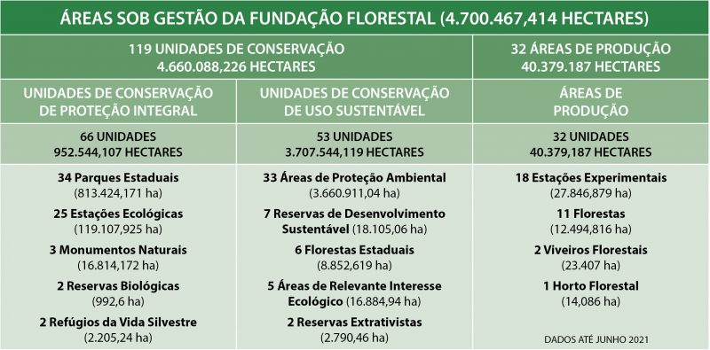
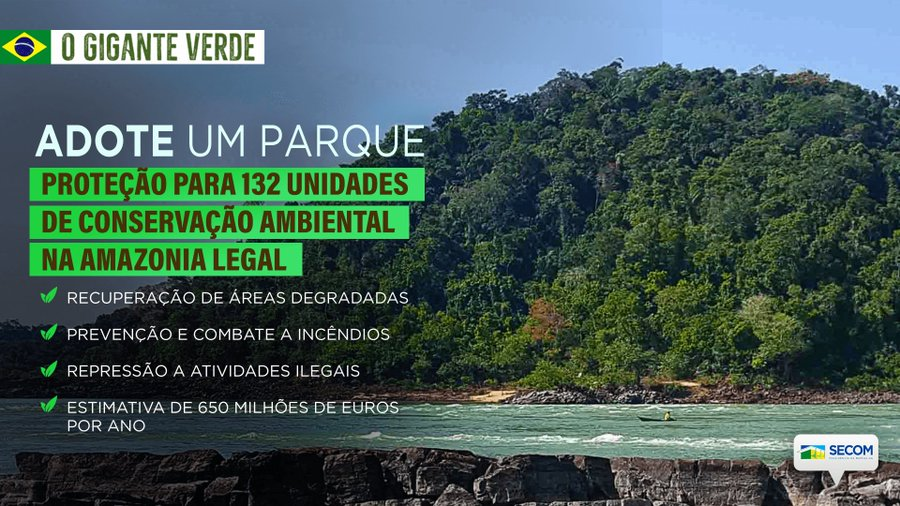
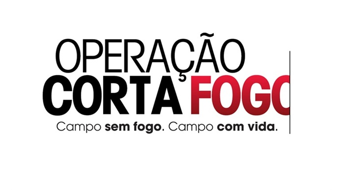
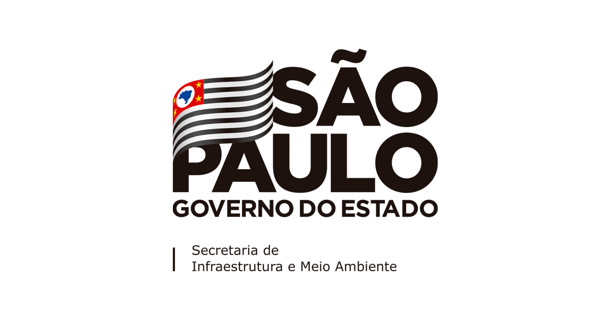

A Fundação Florestal
A Fundação para Conservação e a Produção Florestal do Estado de São Paulo é uma organização ligada à Secretaria do Meio Ambiente, cujo objetivo é conservar, manejar e ampliar as Florestas de Produção e as Unidades de Conservação estaduais. Suas ações visam a conservação ambiental e, principalmente, o nosso assunto em pauta, o Desenvolvimento Sustentável. Protege não só o Parque Serra do Mar, mas também diversas outras áreas ecológicas

https://www.infraestruturameioambiente.sp.gov.br/fundacaoflorestal/institucional/missao/A Fundação Florestal existe desde 1986, foi instituída pela Lei Estadual Número 5.208. O atual Presidente é Mario Mantovani (março de 2022) e o Diretor Executivo Rodrigo Levkovicz (março de 2018)
Esta Fundação é repleta de Programas e Campanhas, como Programa Adote um Parque, focado na doação e patrocínios para ajudar na proteção das Unidades de Conservação, além da Operação Corta Fogo, que auxilia na luta contra os incêndios florestais, que tem aumentado cada vez mais durante os anos.
Além dos Programas e das Campanhas, para uma melhor gestão, a Fundação Florestal divide sua atenção em Unidades de Conservação de Natureza, que são espaços territoriais e marinhos que possuem aspectos naturais ou culturais, importantes para o uso sustentável dos biomas.
Essas Unidades são divididas em:
- APA - Área de Proteção Ambiental
- APA Marinha - Área de Proteção Ambiental Marinha
- ARIE - Área de Relevante Interesse Ecológico
- EEC - Estação Ecológica
- FE - Floresta Estadual
- MONA - Monumento Natural Estadual
- PE - Parque Estadual
- Patrimônio Espeleológico - Cavernas
- RVS - Refúgio de Vida Silvestre
- RE - Reserva Extrativista
- RPPN - Reserva Particular de Patrimônio Natural
O nosso Parque da Serra do Mar pode agregar muitas divisões dessas Unidades, como a APA, ARIE e RVS. Oficialmente é um PE, por ter uma extensão muito grande, dentro de suas extremidades que são delimitadas as divisões.
Quando falamos sobre o Desmatamento, especialmente no PESM, a Fundação Florestal entra em ação, juntamente com os Núcleos Administrativos e a Secretaria do Meio-ambiente, para proteger o Parque e aplicar as devidas punições à quem realizar este ato ilegal.
Essa Organização conta com muitas divisões e aspectos, para promover o Parque, como por exemplo manuais, Telegram de notícias, redes sociais, sites. Tudo para promover o conhecimento e conservação dos biomas e conscientizar sobre os problemas atuais.
Para conhecer mais sobre a Fundação Florestal, acesse a área "Saiba Mais"

https://pt.euronews.com/2021/02/10/adote-um-parque-na-amazonia-brasileira
https://www.spvias.com.br/sustentabilidade/ambiental/operacao-corta-fogo?id=892
https://www.infraestruturameioambiente.sp.gov.br/